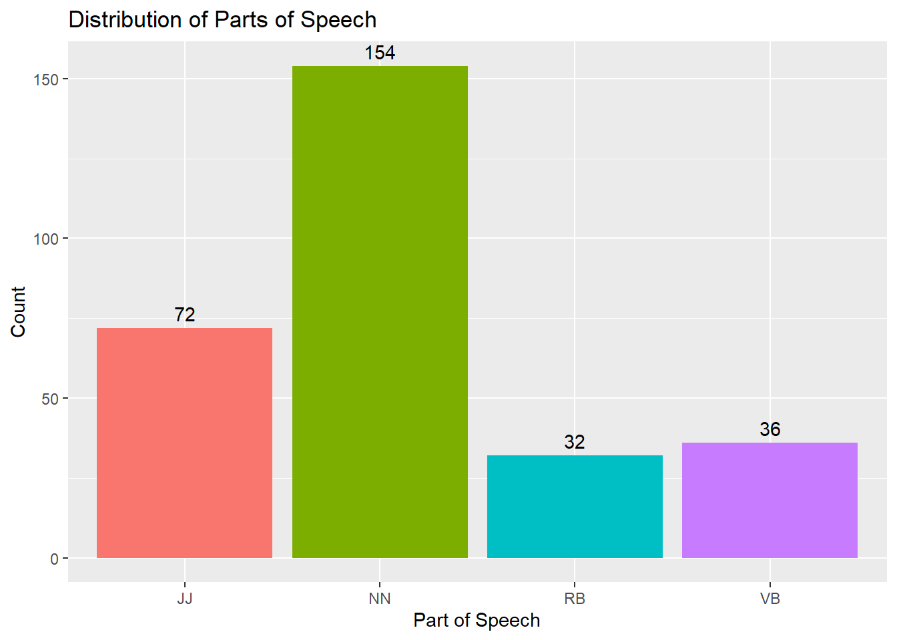
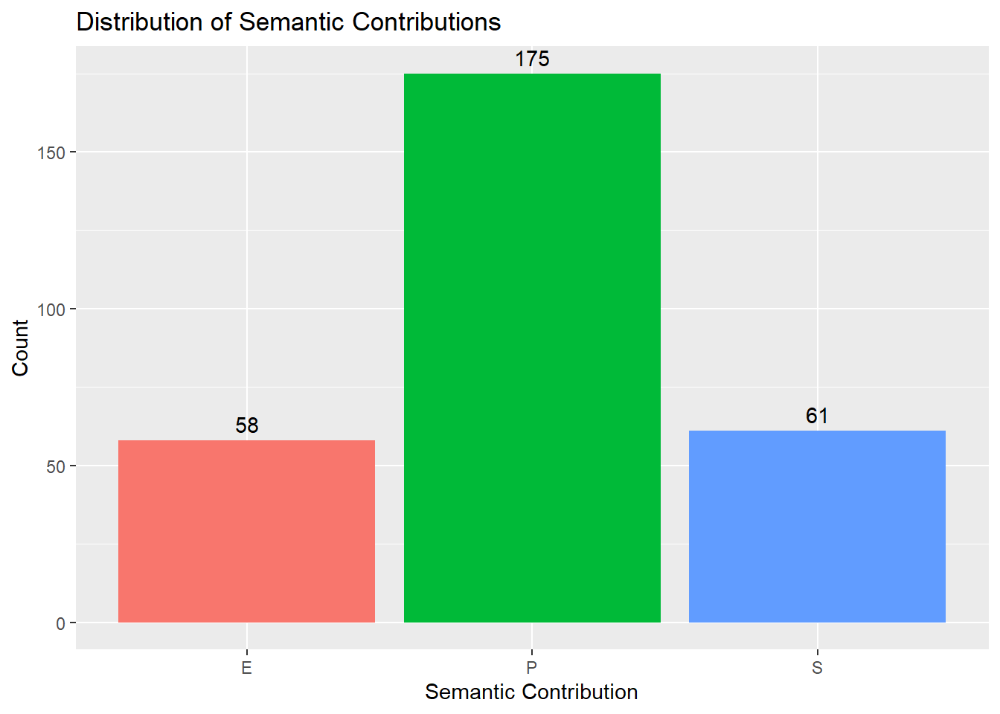
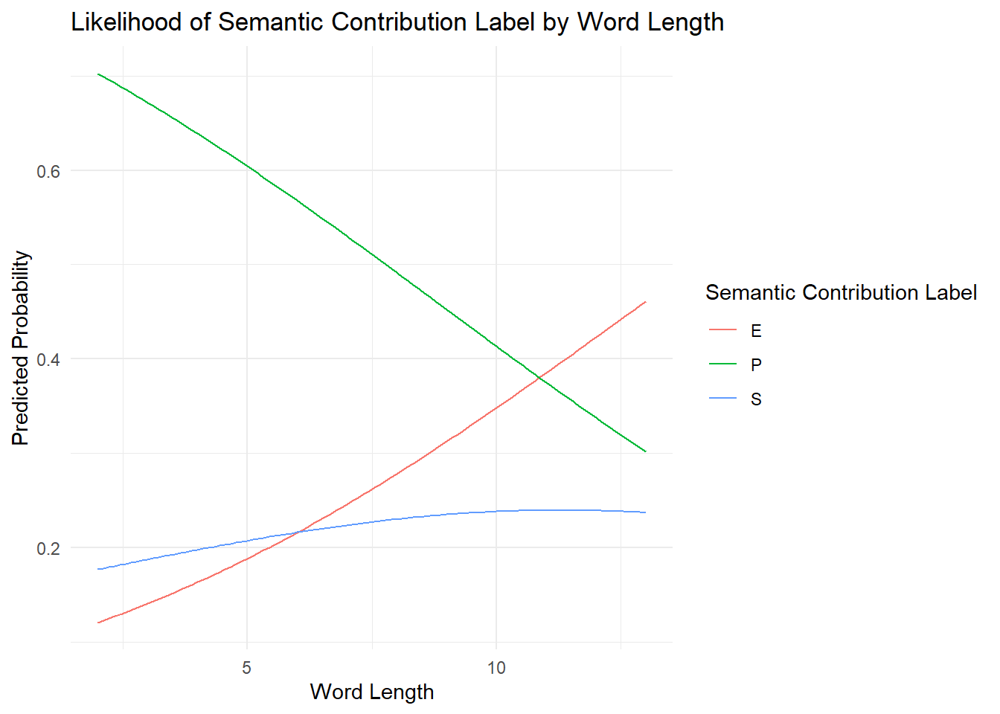
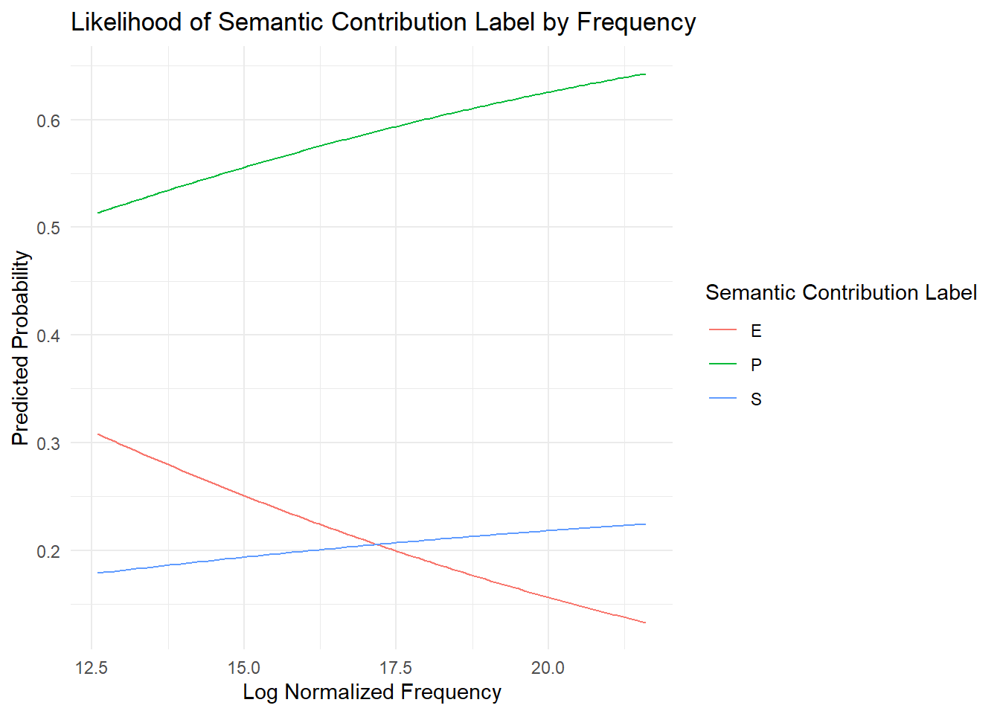

Part of Speech and the Semantic Contribution of Reduplication
Authors
Alex Duchnowski
Arushi Kalpande
Ford Rowe
For the full code and data used in this paper, please visit our GitHub repository.
1 Background and Context
The repetition of a morpheme, word, or phrase, also known as reduplication, has a variety of uses in the world’s languages. When looking at the behavior of English reduplication, we see that its scope is fairly limited in terms of its semantic effects, lacking a productivity that is found in partial or total reduplication found in other languages (Harada 2007). This does not mean that analyzing English reduplication is not worthwhile, and as will be discussed later in this paper, there are still unanswered questions relating to the mechanical properties of reduplication. In fact, the impetus for the research seen here was derived from a casual in-the-wild observation made by this paper’s authors, in which they observed that while both of the following tokens involve the apparently identical morphological process of reduplication, the semantic behavior of “run run” (as opposed to telling someone just to “run”) and “blackmail blackmail” (as opposed to emotional blackmail) contained a subtle difference. In the former, the reduplication seemed to be contributing some form of emphasis or intensity, while in the latter the reduplication seemed to be pointing towards the blackmail being real or normal, as opposed to a more specific or non-standard type of blackmail. This paper, in addition to the goals outlined in Section 1.3, seeks to identify whether or not the differing part-of-speech of the base forms is predictive of the differing semantic behavior of their reduplicated forms.
1.1 Contrastive Reduplication
The specific phenomenon that will be examined in this paper is Contrastive Focus Reduplication, also simply called Contrastive Reduplication (CR), which is a type of morphological process in English that is used to contrast the meaning of the reduplicated form with the meaning of its non-reduplicated base, which may be explicit or implied within the context of an utterance.
As a result of limiting our scope in this way, our research will not be a comprehensive analysis of all semantic behavior of all types of English reduplication. This means that excluded from our analysis will be reduplicated forms such as baby talk (eg. goo-goo, ga-ga); deprecative reduplication, which is used in the depreciation or devaluation of the base form (eg. party-schmarty, vegetables-schmegetables); intensive reduplication, which is used to non-contrastively intensify the meaning of the base form (eg. triplication in “It’s all about money, money, money!”); and others as outlined in the typological work of Ghomeshi et al. (2004).
Additionally, there are some forms of reduplication which may fall under the scope of CR, but whose semantic content is not variable in such a way as to be relevant to the research conducted here. Drawing upon the work of Widlitzki (2016), our investigation into CR will be limited to context-dependent reduplication, in which the meaning of the reduplicated form is somewhat dependent upon the context in which it is uttered. By this measure, we will be excluding CR which falls under the umbrella of having a single default meaning or an emerging default meaning. The former refers to CR which has a broadly recognized meaning that is not dependent upon context, such as “really-really” or “very-very.” The latter refers to CR forms which are seemingly in the process of developing a conventionalized meaning, such as the increasingly salient romantic connotation of the phrase “like-like.”
1.2 Semantic Contribution
Having established the scope of CR that we will be dealing with in this paper, we’ll now turn to elaborating on what we mean when we refer to the ‘semantic contribution’ of reduplication. Put simply, we are referring to the way in which the meaning of the reduplicated word or phrase changes for having undergone the morphological process of reduplication. The following is a three-way typology that we have developed to facilitate the distinction of the different semantic contributions of CR, based primarily on prior work by Ghomeshi et al. (2004) and Widlitzki (2016). Most relevantly, from Ghomeshi et al. (2004:343) we take the categories Prototypical, Extreme, and Salient to be the three major types of meanings conveyed by CR.
Prototypical
CR which is prototypical is used to contrast a real, typical, or standard example with an example that is not understood to be so. This is what is most commonly understood to be the effect of English contrastive reduplication, and, as we will see later in the paper, is the most commonly occurring type. Examples of Prototypical CR (PCR) would be the following:
I’ll make the tuna salad, and you make the SALAD-salad.
Here’s the skinny. We dressmakers have a very strict code, so I need to know, do you deserve to wear virginal white? Because if you don’t, you’ll have to wear an off-white, what we call a hussy white. So which will it be, WHITE-white?
In (1), the salad being described as the “salad-salad” is most likely a leafy green salad that may be referred to as the ‘prototypical’ version of a salad. In being brought to contrast with a tuna salad, a less ‘prototypical’ type of salad than a leafy green salad, (1) demonstrates an example of PCR. In (2), the color “white-white” refers to the former “virginal” white. The speaker is using reduplication to draw a distinction between pure white and off-white, which is not white-white, thus (2) is also representative of the use of PCR.
Extreme
CR which is extreme is used to indicate an intensified meaning, most straightforwardly comparable to saying that something is “very/extremely/super X.” Examples of Extreme CR (ECR) would be the following:
A [to B, who is about to give a recital]: Are you nervous? B: Yeah, but, you know, not NERVOUS-nervous.
First of all, I’m not like a CELEBRITY-celebrity; I don’t get recognized when I’m walking down the street.
In (3), Speaker B is contrasting their level of nervousness on a gradable scale, wherein they are asserting that they are just nervous (i.e., a ‘little’ nervous) as opposed to “nervous-nervous” (i.e., ‘very’ nervous), thus demonstrating a use of ECR. In (4), the speaker is drawing a contrast between different levels of celebrity, arguing that they are only a celebrity to a certain degree, as opposed to celebrities who are of a higher caliber. In this way (4) is an example of ECR by way of the speaker’s assertion that they are not an extreme version of their occupation.
Salient
CR which is salient is used to indicate that there is a contextually salient or accessible sense or reference for the meaning of the reduplicated form. This is different from the above two types of CR, which are both contextually-dependent in their own way, by being inclusive of grammatical categories such as proper nouns, and word types such as indexicals, whose referents change at the level of the utterance rather than the sentence. Examples of Salient CR (SCR) would be the following:
A: Did you check out the leak in the bathroom? B: What leak? A: The LEAK-leak. [drags her into the bathroom]
We have a wonderful bed. I think you’ll enjoy it. Not ENJOY-enjoy. Sleep. Enjoyable sleep.
They just call him psycho-Marcus because they’re trying to distinguish between him and MARCUS-Marcus and normal-Marcus.
In (5), Speaker A is employing contrastive reduplication in order to assert that the leak they are referring to is not some generalized leak out in the world, but is rather a specific leak whose referent should be accessible to Speaker B in the conversational context. Because we are not participating in the conversation between Speakers A and B, unlike the meanings of the CR present in (1-4), the meaning of (5) is left slightly unclear due to the highly contextually salient nature of SCR.
(6) is representative of SCR where it applies to the contrast between a metaphorical and literal reading of the base form. The speaker is using “enjoy-enjoy” to refer to a meaning that contains innuendo, which is a nonstandard reading of “enjoy” that is only accessible in the utterance as a result of their mentioning the bed in the prior sentence. In this way, the meaning of “enjoy-enjoy” arises due to its salience in the context of its utterance, and thus we can classify (6) as an instance of SCR.
Finally we have chosen to classify tokens like the one that appears in (7) as SCR for a reason much similar to (5), in that proper nouns behave in such a way as to ‘pick out’ specific contextually salient individuals, and thus CR may be used to differentiate between two or more similarly-named people. This is the case in (7), where the speaker is using “Marcus-Marcus” to mean something along the lines of “the Marcus that we know” or “the Marcus that isn’t the other two Marcuses that we know,” and so we can refer to this type of reduplication as SCR.
1.3 The Task at Hand
In this paper, we will ask whether the part of speech (POS) of a reduplicated form influences its semantic contribution in the context of its utterance. We investigate this question by annotating and analyzing two English-language corpora. It is our hypothesis that we will see a distinct trend in certain parts of speech being more commonly Prototypical/Extreme/Salient than others, such as scalar adjectives trending extreme or nouns being prototypical.
This question is of value in that English reduplication is rare and often taken to be a purely prototypical process, but as we will see both in our discussion of existing research and in our analysis of our own data, this is not necessarily the case. In related research (Ghomeshi et al., 2004; Widlitzki, 2016) we find acknowledgements of CR outside of the scope of purely prototypical contrast, but the underlying cause for this observed semantic variation in CR has not been elaborated upon to the degree that we will be exploring it in this paper. Insofar as the existing literature is concerned, the motivating factor in the semantic variation of CR forms is currently unclear. Furthermore, since reduplication has multiple subtly distinct effects, our hypothesis is based on the intuition that looking at the type of content being reduplicated might shed light on why the resulting semantic effects differ.
2 Data
2.1 Salad-Salad Corpus
The majority of our confirmed instances of CR are taken from what we will be referring to in this paper as the Salad-Salad Corpus, which consists of the examples and data used in Ghomeshi et al. (2004). All listed entries in this corpus were annotated as instances of contrastive reduplication as a part of their work, thus providing us with a robust base of data upon which to test our hypothesis. The Salad-Salad Corpus was last updated on May 30, 2014, and contains 334 entries along with their source, context, and full quotation. The corpus also contains an index of POS and source medium, as well as other notations such as whether or not the reduplicated form involved repeating the inflectional morphology of a given token.
2.2 OpenSubtitles Corpus
In addition to the Salad-Salad Corpus, we drew upon a sample of a 2018 OpenSubtitles Corpus containing about 222,000 sentences (1.38 million tokens). OpenSubtitles is an online database of subtitles in various languages for movies and TV shows; users upload their transcriptions, which are then shared publicly and downloadable for free. At time of writing, the site contains 7,124,730 subtitle entries. We accessed this corpus through OPUS, an online database of 1,210 corpora across 744 languages.
The OpenSubtitles Corpus that we selected is constrained to English-language subtitles only, is drawn from a variety of genres and periods, and includes both live-action and animated content. Our sample of this corpus, which will be elaborated upon in the following section, consisted of 613 examples which were then manually checked for CR.
3 Methodology
3.1 Preprocessing
When processing both corpora, we limited our focus to the four parts of speech which most often undergo reduplication in English: Nouns, Verbs, Adjectives, and Adverbs (Widlitzki, 2016). The Salad-Salad Corpus required minimal filtering beyond this, as these entries were already confirmed to be CR by Ghomeshi et al. (2004) and were already annotated for their POS in the corpus’s index. Apart from filtering for the four POS’s of interest, we also removed instances of reduplicated “like”, as this has an emerging default meaning (as noted in section 1.1).
Our pre-processing work on the OpenSubtitles corpus was significantly more intensive, as we needed to filter for repetition of words while retaining relevant context for each example and filtering out repetition which was unlikely to be CR. We started by transforming the initial corpus so that every line contained copies of the lines surrounding it for context. The initial filtering of this content was then achieved with the following Linux script (for full context, see this file):
```{bash}cat data/$name/contextualized_$name.txt |grep-vP'^[^\t]*\b([a-z]{3,})[ ,-]+\1[ ,-]+\1\b'|# remove rows with triples in the first columnsed-re's/^([^\t]*)([[\(].*[]\)])(.*)\2/\1\3/g'|# remove bracketed content in the first columnsed-re's/^([^\t]*)/\L\1/'|# convert text in the first column to lowercaseegrep"^[^$tab]*\b([a-z]{3,})[ ,-]\1\b"|# filter for reduplications in the first columnsed-re's/^[^\t]*\b([a-z]{3,})[ ,-]\1\b[^\t]*\t/\1\t/g'`# extract reduplicated words in the first column`\> data/$name/${name}_redups.txt```
As can be seen in the code above, we removed bracketed content since this was typically used to denote scene descriptions, sound effects, or other non-dialogue information. We also converted the column of interest to lowercase to facilitate searching for reduplication without case-sensitivity. Additionally, we removed instances of repetition where a word or morpheme was used more than twice in a row, as this was often singing or laughter, rather than actually reduplication. After these filters were applied, we searched for and extracted examples where a single word at least three letters in length was repeated (with a space, comma, or hyphen separating the two copies). The length requirement was to filter for more contentful words and to preemptively remove words in other POS categories such as prepositions and pronouns. Part of speech was then labeled using the POS tokenizer of the spaCy Python package, and these POS annotations were then used to filter for the four most commonly reduplicated parts of speech, in keeping with the filtering described for our Salad-Salad Corpus data. Applying this filter to about 222,000 lines of subtitles resulted in 613 candidate examples of CR.
3.2 Manual Annotation
Salad-Salad
Our resulting list was 286 entries long, down from the original 334, and was not entirely free of non-CR tokens. For example, an entry in which Jay Leno makes a joke about going to prison within a prison — “prison-prison” — was notated by the original authors as CR, but we agreed that this did not seem to be an accurate notation. In addition to verifying the presence of reduplication, we manually annotated whether or not the semantic contribution of the reduplication was Prototypical, Extreme, or Salient. We divided our annotation into two sessions, starting with the first 100 examples, then meeting to go over our answers and discuss any discrepancies before proceeding to annotate the rest. When we disagreed on an example, we would discuss the reasoning behind our annotations and then revise our judgements to produce a single label for each example. This was done both to improve our understanding of the typology and to ensure we had a large enough set of labeled examples to perform an informative analysis. Subsequently, we annotated the rest in the same manner, annotating individually and then agreeing on a unified ground truth as a group afterwards. Our total number of verified reduplications in the Salad-Salad corpus was 280.
OpenSubtitles
Our list of 613 samples, while filtered for examples that fit a pattern of reduplication, contained a significant amoun of non-CR data. An example of this is repetition that was not reduplication, such as the use of the phrase “now I’m a black widow widow” in A Bug’s Life (the first “widow” is part of “black widow”, the type of spider, and the second is the normal usage of “widow”). To address this, we added the label N to our annotations to indicate that an example was not an instance of CR. By including the surrounding context of each example, we were able to more easily judge whether a repetition was meaningful CR or not. We split the samples into the first 200 entries and the remaining 413 and annotated the sets as was done with the Salad-Salad corpus, with meetings after annotating each set to resolve any disagreements.
Agreement
Using the krippendorff python package (Castro, 2017), we calculated Krippendorff’s Alpha values to see how well we agreed on these labels for each set (we used a few N/U annotations for Non-RC/Unclear for the Salad-Salad dataset, but we treat such labels as missing annotations for the purposes of calculating Krippendorff’s Alpha). The results are as follows:
Salad-Salad:
Examples 1-100: 0.2132
Examples 101-286: 0.5204
OpenSubtitles:
Examples 1-200: 0.6873
Examples 201-613: 0.5542
Overall, this agreement was relatively week, as social scientists typically discard data with an alpha value below 0.667. However, we were able to come to a consensus on the majority of our annotations, and the disagreements we had were typically over edge cases or examples that were difficult to classify. Thus, while we acknowledge that our agreement was not perfect, we believe that our annotations are still valid and can be used for tentative analysis.
3.3 Word Length & Frequency
In addition to the above processing, we will include in our analysis in the next section some discussion of word length and word frequency as potentially influential factors in our results. This is partially derived from the acknowledgement that POS may not exclusively have a part to play in the semantic contribution of reduplication (for instance, a word’s frequency may impact whether or not it can be understood with a prototypical versus salient interpretation), and are interested in substantiating more strongly the specific link between POS and semantic contribution, should there be one. Word length could be calculated straightforwardly in R.
```{r}salad <-read_csv("../data/salad_consolidated_refined.csv") # Reading the Filesalad$Length <-nchar(salad$Word) # Creating a Length Columnfreq_list <-read_csv("../data/unigram_freq.csv") # Reading the Frequency Counter Filefreq_list$Word <- freq_list$word # Making it so that both tables have a "Word" columnfreq_list <- freq_list[, -1] # Preventing the "word" column from sticking aroundsalad_counts <-inner_join(salad, freq_list, by="Word") # Adding the frequency list to the main tibble```
```{r}full_222k <-read_delim("../data/en_v1_222k/en_v1_222k_full.csv", delim="\t") # Reading the File, adjusting for it being .csvfull_222k$Length <-nchar(full_222k$Word) # Doing the Character Countsfull_222k_counts <-inner_join(full_222k, freq_list, by="Word") # Doing Freqswrite_csv(full_222k_counts, "../data/en_v1_222k/full_222k_counted.csv") # Writing the File```
Our calculations for word frequency are based on a dataset of the top 333,333 most frequent English words as they appear in the Google Web Trillion Word Corpus. To normalize the values, the log of the frequency was taken.
4.0 Analysis & Discussion
4.1 Findings
As mentioned in the previous section, we annotated both the Salad-Salad and OpenSubtitles datasets. Although Salad-Salad’s contents were all determined to be CR, as became apparent during the annotating phase, the vast majority of the examples in our OpenSubtitles subset were still not true CR even after several rounds of filtering. The following pie chart illustrates the percentages of different labels, with ‘N’ representing ‘not CR.’
library(tidyr)library(dplyr)
Attaching package: 'dplyr'
The following objects are masked from 'package:stats':
filter, lag
The following objects are masked from 'package:base':
intersect, setdiff, setequal, union
Word Label POS Word_Length Freq_Count Log_Freq_Count
1 adam S NN 4 21694386 16.89256
2 aggressive P JJ 10 7345918 15.80966
3 aggressive P JJ 10 7345918 15.80966
4 alone E JJ 5 39326417 17.48741
5 amherst P NN 7 2846723 14.86168
6 anywhere E RB 8 23947583 16.99138
Warning in readLines("../data/annotations/opensubs_agreed_2.txt"): incomplete
final line found on '../data/annotations/opensubs_agreed_2.txt'
all.labels <-c(labels.1, labels.2)label.freq <-table(all.labels)label.df <-data.frame(Label =names(label.freq), Frequency =as.numeric(label.freq))label.df$Percentage <- label.df$Frequency /sum(label.df$Frequency) *100ggplot(label.df, aes(x ="", y = Frequency, fill = Label)) +geom_bar(stat ="identity", width =1) +coord_polar("y", start =0) +labs(title ="Distribution of Semantic Contribution Labels in OpenSubs Dataset",fill ="Label") +theme_void() +scale_fill_discrete(labels =paste(label.df$Label, sprintf("(%0.1f%%)", label.df$Percentage))) +theme(legend.position ="bottom")
Thus, we decided to select only the positive CR examples from the OpenSubtitles dataset and append these annotated examples to the Salad-Salad dataset and perform statistical analysis on this combined dataset. First, we looked at the distributions of both POS and Semantic Contribution Labels to get a sense of the makeup of our dataset, as seen in the following bar graphs. Nouns were by far the most common POS to be contrastively reduplicated, and the most common semantic contribution assigned across the board was the prototypical label.
ggplot(combined.data, aes(x = POS, fill = POS)) +geom_bar(show.legend =FALSE) +geom_text(stat='count', aes(label=after_stat(count)), vjust=-0.5) +labs(title ="Distribution of Parts of Speech",x ="Part of Speech",y ="Count")

ggplot(combined.data, aes(x = Label, fill = Label)) +geom_bar(show.legend =FALSE) +geom_text(stat='count', aes(label=after_stat(count)), vjust=-0.5) +labs(title ="Distribution of Semantic Contributions",x ="Semantic Contribution",y ="Count")

Looking at the stacked graph below, we can see certain trends beginning to surface. Although prototypical labels still make up a large percentage of the examples for each POS, there is a more even split between prototypical and extreme readings for adjectives, and prototypical and salient readings for adverbs. The exact percentages of semantic contribution by POS is given in the table below the graph.
library(nnet)summary(combined.data)
Word Label POS Word_Length
Length:294 Length:294 Length:294 Min. : 2.000
Class :character Class :character Class :character 1st Qu.: 4.000
Mode :character Mode :character Mode :character Median : 5.000
Mean : 5.194
3rd Qu.: 6.000
Max. :13.000
Freq_Count Log_Freq_Count
Min. :2.957e+05 Min. :12.60
1st Qu.:2.173e+07 1st Qu.:16.89
Median :4.965e+07 Median :17.72
Mean :1.430e+08 Mean :17.70
3rd Qu.:1.447e+08 3rd Qu.:18.79
Max. :2.399e+09 Max. :21.60
ggplot(combined.data, aes(x = POS, fill = Label)) +geom_bar() +labs(title ="Distribution of Semantic Contributions by POS",x ="POS",y ="Count")
`summarise()` has grouped output by 'POS'. You can override using the `.groups`
argument.
pos.totals <- combined.data %>%group_by(POS) %>%summarize(total.count =n())label.percentages <- label.counts %>%left_join(pos.totals, by ="POS") %>%mutate(percentage = (count / total.count) *100)label.percentages.df <-as.data.frame(label.percentages)kable(label.percentages.df, caption ="Percentage of Semantic Contributions by POS")
Percentage of Semantic Contributions by POS
POS
Label
count
total.count
percentage
JJ
E
32
72
44.444444
JJ
P
35
72
48.611111
JJ
S
5
72
6.944444
NN
E
13
154
8.441558
NN
P
107
154
69.480519
NN
S
34
154
22.077922
RB
E
7
32
21.875000
RB
P
12
32
37.500000
RB
S
13
32
40.625000
VB
E
6
36
16.666667
VB
P
21
36
58.333333
VB
S
9
36
25.000000
The regression model we ran on the dataset formalized these trends, as discussed in the next section.
4.2 Analysis
We ran a multinomial logistic regression model on our dataset, as our output variable (semantic contribution) was categorical. We ran a total of three models, each looking at a different set of predictor variables. The first model takes POS, word length, and log word frequency into account. The summary results of this model are shown below.
# weights: 21 (12 variable)
initial value 322.992013
iter 10 value 253.237645
iter 20 value 252.191106
iter 20 value 252.191105
iter 20 value 252.191105
final value 252.191105
converged
As the distributions showed that nouns and prototypical were the most common in their respective variables, we used these categories as our baselines when calculating the log odds in the model.
The results can be interpreted as follows:
The log odds of having a salient reading rather than a prototypical reading:
decreases by 0.80 as you switch from noun to adjective.
increases by 1.42 as you switch from noun to adverb.
increases by 0.29 as you switch from noun to verb. (not significant result)
increases by 0.084 for every 1 letter increase in word length. (not significant result)
decreases by 0.097 for every 1 unit increase in log frequency. (not significant result)
The log odds of having an extreme reading rather than a prototypical reading:
increases by 2.01 as you switch from noun to adjective.
increases by 1.86 as you switch from noun to adverb.
increases by 0.85 as you switch from noun to verb. (not significant result)
increases by 0.147 for every 1 letter increase in word length. (not significant result)
decreases by 0.149 for every 1 unit increase in log frequency. (not significant result)
The significance of the coefficient results was determined by running a 2-tailed z test, and the resulting z and p scores are given below.
z <-summary(model)$coefficients/summary(model)$standard.errorsz
(Intercept) POSJJ POSRB POSVB Word_Length Log_Freq_Count
S 0.06164851 -1.547434 2.849142 0.6546104 0.944361 -0.9193509
E -0.12347188 5.185728 3.012900 1.5273242 1.563639 -1.2351447
p <- (1-pnorm(abs(z), 0, 1)) *2p
(Intercept) POSJJ POSRB POSVB Word_Length Log_Freq_Count
S 0.9508427 1.217586e-01 0.004383735 0.5127186 0.3449852 0.3579121
E 0.9017334 2.151730e-07 0.002587638 0.1266804 0.1179023 0.2167767
Using a 0.05 threshold, we can see that the log odd differences for noun to verb, word length, and log frequency are not significant. For the case of noun to verb, this result makes sense as the original distributions also show that these two categories show a similar split between the three semantic categories. For the continuous variables, although the trends might not be significant, and a larger dataset might disprove trends observed here, we still ran models on just these variables to get a sense of the overall trends. The results of the word length model are plotted below. Based on the coefficients calculated by the model, the graph plotted the predicted likelihood of being assigned a particular semantic contribution label given word length.
length.model <-multinom(Label ~ Word_Length, data = combined.data)
# weights: 9 (4 variable)
initial value 322.992013
iter 10 value 277.820475
final value 277.820469
converged
summary(length.model)
Call:
multinom(formula = Label ~ Word_Length, data = combined.data)
Coefficients:
(Intercept) Word_Length
S -1.587050 0.1035639
E -2.158591 0.1986573
Std. Errors:
(Intercept) Word_Length
S 0.4656235 0.08452959
E 0.4734252 0.08237858
Residual Deviance: 555.6409
AIC: 563.6409
new.data <-data.frame(Word_Length =seq(min(combined.data$Word_Length), max(combined.data$Word_Length), length.out =100))length.predictions <-predict(length.model, newdata = new.data, type ="probs")length.predictions.df <-data.frame(new.data, length.predictions)length.predictions.df <-gather(length.predictions.df, Label, Probability, -Word_Length)ggplot(length.predictions.df, aes(x = Word_Length, y = Probability, color = Label)) +geom_line() +labs(title ="Likelihood of Semantic Contribution Label by Word Length",x ="Word Length",y ="Predicted Probability",color ="Semantic Contribution Label") +theme_minimal()

As word length increases, the probability of getting a prototypical reading decreases, while the probability of getting an extreme reading increases. There is also a slight increase in the salient category, but this is a much slighter trend than seen in the other two. Initial explanations for why these trends could have arisen are discussed in the next section. Similarly, we ran a model with log frequency as the predicting variable.
freq.model <-multinom(Label ~ Log_Freq_Count, data = combined.data)
# weights: 9 (4 variable)
initial value 322.992013
final value 280.015169
converged
summary(freq.model)
Call:
multinom(formula = Label ~ Log_Freq_Count, data = combined.data)
Coefficients:
(Intercept) Log_Freq_Count
S -1.0582332 0.0002438423
E 0.9773974 -0.1182008828
Std. Errors:
(Intercept) Log_Freq_Count
S 1.670483 0.09366132
E 1.649430 0.09365141
Residual Deviance: 560.0303
AIC: 568.0303
new_data <-data.frame(Log_Freq_Count =seq(min(combined.data$Log_Freq_Count), max(combined.data$Log_Freq_Count), length.out =100))freq.predictions <-predict(freq.model, newdata = new_data, type ="probs")freq.predictions.df <-data.frame(new_data, freq.predictions)freq.predictions.df <-gather(freq.predictions.df, Label, Probability, -Log_Freq_Count)ggplot(freq.predictions.df, aes(x = Log_Freq_Count, y = Probability, color = Label)) +geom_line() +labs(title ="Likelihood of Semantic Contribution Label by Frequency",x ="Log Normalized Frequency",y ="Predicted Probability",color ="Semantic Contribution Label") +theme_minimal()

This model also revealed some general trends. Namely, prototypical readings (and to a lesser extent, salient readings) increased as frequency increased, while extreme readings decreased as frequency increased. In case the trends seen in these graphs were a result of POS being a confounding variable influencing word length or frequency (e.g., if adjectives in our dataset were longer or less frequent overall than other POS, trends seen in these models’ results could just be a result of POS and not the variable at hand), we calculated simple mean and median stats for word length and frequency by POS.
These stats show that across the different parts of speech, the word length and frequency were roughly the same (the only notable divergence is adverbs being slightly more frequent on average), and so we can conclude that the trends observed in the word length and frequency models are a result of those variables directly and not an underlying POS effect.
4.3 Discussion
Thus, based on the models and the various trends and results, we can conclude that POS does have a statistically significant impact on the semantic contribution of contrastive reduplication. Meanwhile, word length and frequency also seem to correlate to certain trends in semantic contribution of CR, but based on our data, these trends are not statistically significant.
There were many trends relating to parts of speech. First, nouns are most likely out of the parts of speech to get prototypical readings, as we expected. Verbs are similar to nouns in their overall distribution of semantic contributions, with the highest portion of them having prototypical readings. Adjectives, on the other hand, are more likely to get extreme readings than other parts of speech (a trend which we had also anticipated). Finally, adverbs are most likely out of the parts of speech to get salient readings, and get them more often than other readings. These trends have several potential explanations. For instance, as supported by our annotating experiences as well, it was much easier to conceptualize a prototypical definition for nouns and verbs than it was for modifiers. For example, it is difficult to describe a prototypical definition for the adjective “favorite,” and indeed, both examples of this word got an extreme reading. Building off of this, as adjectives can have a scalar nature, they lend themselves well to extreme CR readings. Finally, in our dataset, indexicals such as “here” were classed as adverbs, and as indexicals require context to resolve their meanings, we believe this is a reason why adverbs got the salient reading most often.
The trends in the word length and frequency results were described in the previous section, and they also have preliminary explanations. The decrease in prototypical readings as word length increases makes sense, as longer words are likely less frequent and thus have less readily accessible prototypical versions. This is confirmed by the frequency model’s results, as prototypical readings increase as frequency increases. Extreme readings, on the other hand, increase with word length, and this corresponds to its decrease as frequency increases. Why exactly longer or less frequent words tend to get extreme readings is not immediately clear. As mentioned above, since there is no influence of POS on the average length or frequency of any given word, we cannot assume this trend in the extreme readings is correlated with adjectives and their length/frequency. Since adjectives have this tendency for getting extreme readings, we had predicted that this could be a factor in the trend for extreme readings, but since this might not be the case, an explanation for this trend is left for future research. Finally, though there is a slight slope in the lines for salient readings, it is overall much more stable than the other factors. This could be because given a rich enough discourse context, any word can take on a salient CR meaning, and thus the likelihood of getting this reading is not influenced by word length or frequency. However, it is worth noting that as mentioned above, the word length and frequency results were not statistically significant according to our dataset. Thus, further research on a larger dataset might confirm or deny the significance of these trends.
4.4 Limitations
There are, of course, aspects of the research we have described here which could be improved through further investigation or a reworking of our methodological process. A particular factor that limits the extent of our findings is that some of the entries in the Salad-Salad Corpus are drawn from written sources, and as acknowledged in Widlitzki (2016), the informal register of reduplication as a whole can be a biasing influence on what is written versus spoken when it comes to this linguistic phenomenon. Our data is not exclusively spoken language, and thus may be somewhat skewed relative to a data that is entirely based on transcribed utterances.
A major caveat to our findings is that our typology was fleshed out both using examples from our dataset, and overall was designed by the three of us in anticipation of annotating the rest of our data, resulting in us having some theory as to how our annotations ‘should’ align with our data when we did sit down and begin sorting. For example, it is possible that our classification of many adjectives as Extreme may have been to some degree influenced by our expectation that this would be the case upon aggregating our annotated data. There is certainly some bias in our research as a result of us acting as both annotators and analysts.
We would also like to acknowledge that the typology that we constructed at the outset, though deliberated and agreed upon between the three of us, could be fundamentally flawed on a theoretical level; there could be categories missing whose presence would create a better model for the trends that we observe, for instance. Moreover, our low agreement levels suggest that this typology may not be very well-defined, and so we might wish to refine these categories before performing any follow-up research. There are also other typologies of CR not based on a P/E/S paradigm of semantic contribution, such as the scale of conventionalization of meaning discussed in Section 1 that was proposed in Widlitzki (2016), that may be more illuminating with regards to the reason for variation within CR.
5.0 Conclusion
Based on our dataset, a few statistically significant trends between POS and semantic contribution of reduplication have been identified. Additionally, some trends between word length/frequency and semantic contribution have also been observed, but more research into the strength of these trends is needed. Supplemental data from a larger corpus can provide more evidence to confirm or challenge these trends, and potentially bring to light new insights regarding the nature of contrastive reduplication.
Ghomeshi, Jila & Jackendoff, Ray & Rosen, Nicole & Russell, Kevin. (2004). Contrastive Focus Reduplication in English (The Salad-Salad Paper). Natural Language and Linguistic Theory. 22. 307-357. 10.1023/B:NALA.0000015789.98638.f9.
Bianca, Widlitzki. (2016). Talk talk, not just small talk. Exploring English contrastive focus reduplication with the help of corpora. ICAME Journal. 40. 10.1515/icame-2016-0008.
Inkelas, Sharon & Downing, Laura. (2015). What is Reduplication? Typology and Analysis Part 1/2: The Typology of Reduplication. Language and Linguistics Compass. 9. 502-515. 10.1111/lnc3.12166.
Harada, Ryuji. (2007). A Note on Language Typology by the Status of Reduplication. CORE. oai:otsuma.repo.nii.ac.jp:00001776